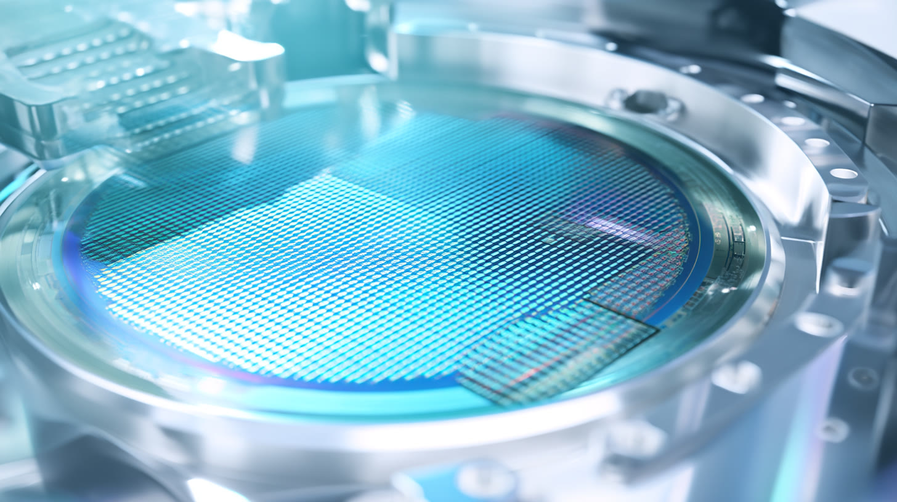
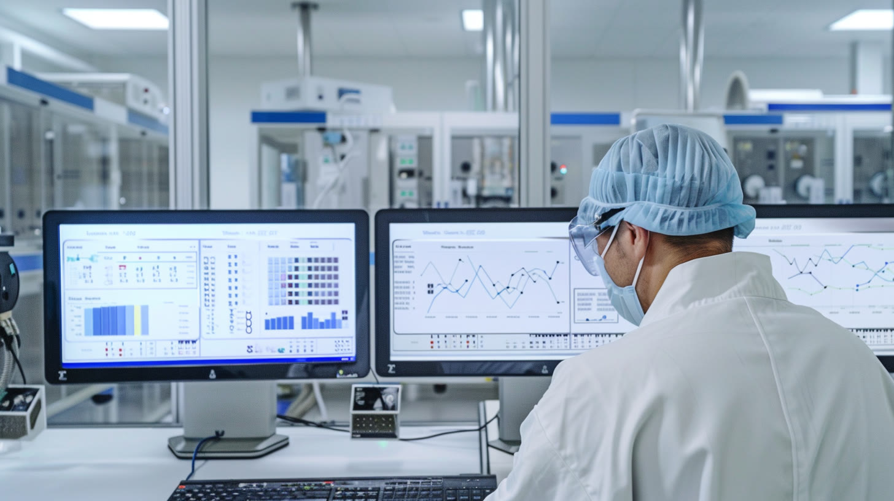

SEMICONDUCTOR · DISPLAY
Etching the future,
atom by atom.
플라즈마 식각 기술로 반도체 Front-End부터 Advanced Package, 디스플레이 양산 라인까지.
ICD는 2000년부터 플라즈마를 연구해 온 장비 회사입니다. 칩이 더 작고, 더 깊고, 더 촘촘해질수록 식각의 정밀도가 성능을 결정합니다.
ICD 이야기 →Markets we serve

Products
전체 제품 보기 →
01 · FRONT-END
NexPion™
R-wave Enhanced Plasma Etcher. 초고종횡비 Trench · Contact · Via Hole 식각.
GAA · 3D DRAM · HBM
02 · FRONT-END
ALE Series
High Throughput과 Atomic Scale Control을 함께 구현하는 원자층 식각 플랫폼.
차세대 Memory · Logic
03 · ADVANCED PACKAGE
Cu Ion Milling
독자 플라즈마 소스 기반의 고밀도 플라즈마 Cu 식각.
Cu Seed · Si Interposer · OLEDoS
04 · ADVANCED PACKAGE
BDF Etch
패키지 기판용 식각 솔루션. [BDF 정식 명칭 · 공정 설명]
Etch Rate · Uniformity · Throughput
05 · DISPLAY
Plasma Asher
증착 전 유기물 제거와 표면 처리를 위한 플라즈마 애싱 시스템.
AMOLED · [적용 공정]
TECHNOLOGY
플라즈마를
원자 단위로 제어합니다.
공정 가스와 RF Power로 진공 챔버 안에 고밀도 플라즈마를 만들고, 이온 에너지를 정밀하게 다뤄 원하는 막만 깎아냅니다.
01Process Gas
02RF Power
03High Density Plasma
04Controlled Ion Energy
05Precision Etch

ICD by the numbers
2000
설립
040910
KOSDAQ 상장
267
임직원
[00]
보유 특허
Featured stories
뉴스룸 전체 보기 →